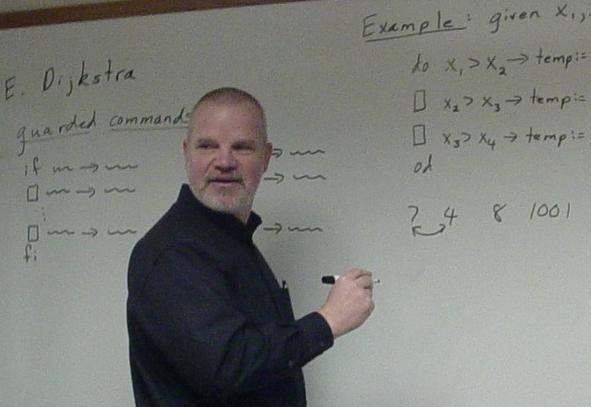

<div class="container sbu-content">
  <div class="row sbu-prof-content">
    <div class="col-md-5">
     <div class="sbu-prof-img">
      
    </div>
    <h2 class="prof-info">Steven K. Andrianoff, Ph.D.</h2>
    <div class="col-md-5 prof-contact">
      <h4>Contact Information</h4>
      <p>Office: Walsh 113</p>
      <p>Phone: (716) 375-2053</p>
      <p>Email: andrianoff@sbu.edu</p>
    </div>
    <div class="col-md-4 prof-officeHours">
      <h4>Office Hours</h4>
      <p>Mon 1:30 - 2:30</p>
      <p>Tue 1:30 - 2:30</p>
      <p>Wed 2:30 - 4:00</p>
      <p>Thurs 1:30 - 3:00</p>
      <p>Fri 11:30 - 12:30</p>
    </div>
  </div>
  <div class="col-md-7">
    <div class="prof-data">
      <p><h3>Fall 2013 Classes:</h3></p>
      <table  class="table break">
        <tr>
          <td><strong>Course Name</strong></td>
          <td><strong>Lecture Time</strong></td>
          <td><strong>Lecture Location</strong></td>
          <td><strong>Lab Time</strong></td>
          <td><strong>Lab Location</strong></td>
        </tr>
        <tr>
          <td>CS101 Beauty &amp; Joy of Computing</td>
          <td> MW 11:30 - 12:20</td>
          <td>Walsh 204</td>
          <td>T 2:30 - 4:30</td>
          <td>Walsh 101</td>
        </tr>
        <tr>
          <td>CS131 Computer Science I</td>
          <td>MWF 9:30 - 10:20</td>
          <td>Walsh 204</td>
          <td>M 1:30 - 3:30</td>
          <td>Walsh 101</td>
        </tr>
        <tr>
          <td><a href="current/CS490">CS490 Software Engineering</a></td>
          <td>TTH 10:00 - 11:15</td>
          <td>Walsh 103</td>
          <td>TBA</td>
          <td>TBA</td>
        </tr>
      </table>
      <p><h3>Current Projects and Activities:</h3></p>
      <table class="table break">
        <tr><td>Android development</td></tr>
        <tr><td>Corona Project</td></tr>
        <tr><td>High School Programming Contest </td></tr>
        <tr><td>AP Computer Science Exam Reader </td></tr>
        <tr><td>Scripted Role Playing exercises</td> </tr>
        <tr><td>Community-Based Learning course: Technical Consulting in the Community</td></tr>
        <tr><td>Service trip to Laos (SIFE)</td></tr>

      </table>
      <p><h3>Professional Interests:</h3></p>
      <table class="table break">
        <tr><td>Object-oriented programming</td></tr>
        <tr><td>First-year programming instruction</td></tr>
        <tr><td>Service learning in Computer Science</td></tr>
        <tr><td>Distributed Systems</td></tr>
        <tr><td>Distributed Systems</td></tr>
        <tr><td>Concurrent Programming</td></tr>
      </table>
      <p><h3>Personal:</h3></p>
      <table class="table">
        <tr><td>Family (especially grandkids)</td></tr>
        <tr><td>Baseball (anything baseball, a Yankees fan)</td></tr>
        <tr><td>Portville Central School Board of Education</td></tr>
      </table>
    </div>
  </div>
</div>
</div>